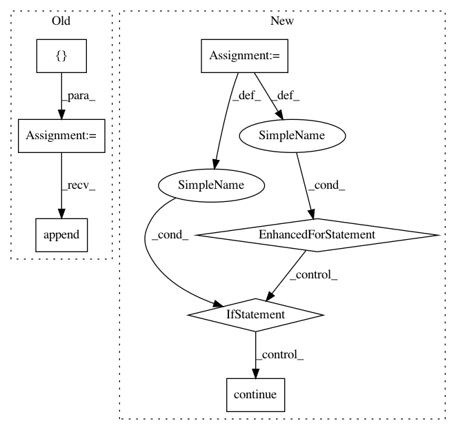

53aeaaf93a5daddaafea79ee403768fa5d057c78,tests/test_applets/dataSelection/testOpDataSelection.py,TestOpDataSelection_Basic2D,testProjectLocalData,#TestOpDataSelection_Basic2D#,320
Before Change
reader.ProjectDataGroup.setValue("DataSelection/local_data")
// Create a list of dataset infos . . .
datasetInfos = []
// From project
info = DatasetInfo()
info.location = DatasetInfo.Location.ProjectInternal
info.filePath = "This string should be ignored..."
info._datasetId = "dataset1" // (Cheating a bit here...)
info.invertColors = False
info.convertToGrayscale = False
datasetInfos.append(info)
reader.Dataset.setValues(datasetInfos)
projectInternalData = reader.Image[0][...].wait()
After Change
numpy.testing.assert_array_equal(imgData2Dc, self.imgData2Dc)
def testProjectLocalData(self, serializer, empty_project_file):
for fileName in self.generatedImages2Dc:
// For some reason vigra saves 2D+c data compressed in gifs, so skip!
if Path(fileName).suffix in self.compressedExtensions + [".gif"]:
continue
graph = lazyflow.graph.Graph()
reader = OperatorWrapper(OpDataSelection, graph=graph, operator_kwargs={"forceAxisOrder": False})
reader.ProjectFile.setValue(empty_project_file)
reader.WorkingDirectory.setValue(str(Path(empty_project_file.filename).parent))
reader.ProjectDataGroup.setValue("DataSelection/local_data")
// From project
inner_path = serializer.importStackAsLocalDataset([fileName])
info = DatasetInfo(
location=DatasetInfo.Location.ProjectInternal,
project_file=empty_project_file,
filepath=inner_path
)
reader.Dataset.setValues([info])
projectInternalData = reader.Image[0][...].wait()
assert projectInternalData.shape == self.imgData2Dc.shape, (projectInternalData.shape, self.imgData2Dc.shape)
assert (projectInternalData == self.imgData2Dc).all()
class TestOpDataSelection_Basic_native_3D(object):
Test related to loading file types that support 3D
@classmethod
def setup_class(cls):
In pattern: SUPERPATTERN
Frequency: 3
Non-data size: 7
Instances
Project Name: ilastik/ilastik
Commit Name: 53aeaaf93a5daddaafea79ee403768fa5d057c78
Time: 2019-07-26
Author: tomaz.vieira@embl.de
File Name: tests/test_applets/dataSelection/testOpDataSelection.py
Class Name: TestOpDataSelection_Basic2D
Method Name: testProjectLocalData
Project Name: arogozhnikov/einops
Commit Name: 29389772364178f76ccf565917870639cad283bb
Time: 2018-09-27
Author: iamfullofspam@gmail.com
File Name: einops.py
Class Name:
Method Name: get_axes_names
Project Name: chainer/chainercv
Commit Name: 90b78b1379b3423aa3b4b5d0de7313f88bda23ab
Time: 2019-02-17
Author: yuyuniitani@gmail.com
File Name: chainercv/utils/mask/mask_to_bbox.py
Class Name:
Method Name: mask_to_bbox